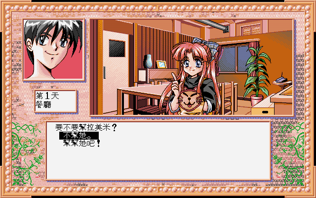

名稱：卒業旅行 (中文版)
簡介：日本G.Labo1996年開發的18禁戀愛劇情故事遊戲，由JANIS代理發行，1997年由歡樂盒
中文化並代理發行 [待補]。

保護：Windows版無保護，DOS版為光碟，破解碼（放入光碟才有背景音樂）：
RYK.EXE
3C 01 74 33 90 90 90
-- -- 90 90 -- -- --
備註：Windows版的內容其實和DOS版完全相同，只差在遊戲可不放入光碟（會沒有背景音樂）。
由於內容仍為DOS版，故在XP以上的系統執行會有相容性的問題，例如背暗音樂播放會
斷斷續續等。